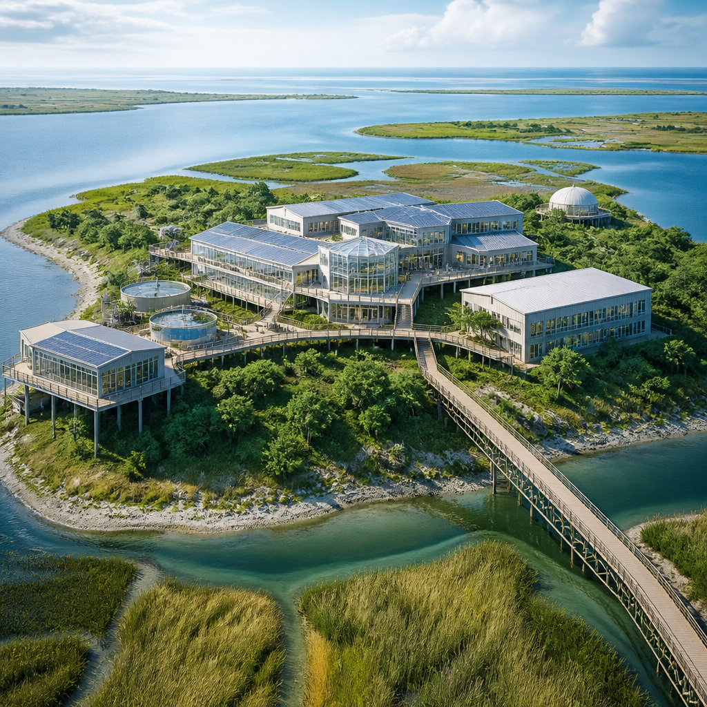
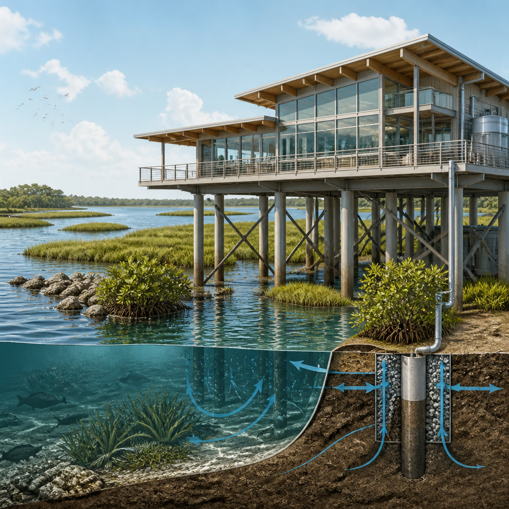

La nuova struttura sostituirà l’edificio chiuso per danni strutturali legati agli uragani e sarà costruita sopra la pianura alluvionale.
NOAA ha annunciato il finanziamento per ricostruire un laboratorio a Beaufort, nella Carolina del Nord. La nuova struttura prenderà il posto dell’edificio precedente, chiuso definitivamente nel 2024 dopo gravi danni strutturali collegati agli uragani. In seguito a un’ispezione ordinaria, l’agenzia aveva stabilito che i danni alle fondamenta rendevano pericolosa l’occupazione dell’edificio.
Il progetto riceverà 64 milioni di dollari dal Disaster Relief Supplemental Appropriations Act del 2025, il provvedimento destinato agli aiuti per i disastri. La progettazione e le attività che precedono la costruzione dovrebbero iniziare all’inizio del 2027. Il nuovo laboratorio sarà realizzato sopra la pianura alluvionale, cioè l’area che può essere interessata dalle piene, e sarà progettato per resistere a tempeste e inondazioni.
Il Beaufort Laboratory è stato istituito nel 1899 ed è il secondo più antico laboratorio federale di scienze marine del Paese. È precedente alla stessa NOAA di oltre settant’anni. Nel 1902 il laboratorio si trasferì nella sede attuale, sull’isola di Pivers, dove si trova il complesso del campus.
La posizione del centro di ricerca è parte della sua importanza scientifica. Il laboratorio si trova nel secondo estuario più grande del Paese, un ambiente costiero in cui le acque interne incontrano il mare, e vicino alla Corrente del Golfo. NOAA indica che la nuova struttura consentirà di proseguire la ricerca svolta finora e di rafforzare la collaborazione con partner dell’industria e del mondo accademico.

Gli spazi del nuovo laboratorio dovranno ampliare le attività di ricerca e i servizi di NOAA sia lungo la costa della Carolina del Nord sia nel resto degli Stati Uniti. Tra i compiti indicati ci sono lo studio, il monitoraggio e la previsione delle fioriture algali dannose: aumenti di alghe che possono avere effetti negativi sull’ambiente marino.
La struttura sarà inoltre impiegata per usare sistemi senza equipaggio nella mappatura degli habitat sottomarini e nel ripristino dei coralli. Gli habitat sottomarini sono gli ambienti in cui vivono le specie marine; mapparli significa descriverne e localizzarne le caratteristiche. Il laboratorio fungerà anche da centro di ricerca per sostenere la gestione della pesca nell’Atlantico meridionale e la tutela delle risorse marine.
Un’altra linea di lavoro riguarda la valutazione delle infrastrutture naturali per la protezione delle coste. Con questa espressione NOAA si riferisce agli elementi naturali usati per contribuire alla difesa costiera. Il campus gestisce inoltre la Rachel Carson National Estuarine Research Reserve, una riserva nazionale di ricerca estuarina, offrendo opportunità per istruzione, ricerca e usi tradizionali compatibili.
Nel laboratorio di Beaufort lavorano personale del National Ocean Service e del National Marine Fisheries Service di NOAA, insieme al North Carolina Coastal Reserve e al National Estuarine Research Reserve. Quest’ultima rete di riserve è gestita attraverso una collaborazione tra il federal Office for Coastal Management di NOAA e la Division of Coastal Management della Carolina del Nord.
Il laboratorio di Beaufort, istituito nel 1899, sarà ricostruito dopo la chiusura dell’edificio danneggiato dagli uragani. Il finanziamento previsto è di 64 milioni di dollari. La futura struttura sarà sopraelevata rispetto alla pianura alluvionale e sosterrà ricerche su fioriture algali dannose, habitat sottomarini, coralli, pesca, risorse marine e protezione delle coste.
Questo articolo l'hai letto sul blog di Meteo Radar: un'app che ti mostra da dove vengono i numeri, invece di limitarsi a dartelo. E ogni mattina ne trovi uno nuovo come questo.